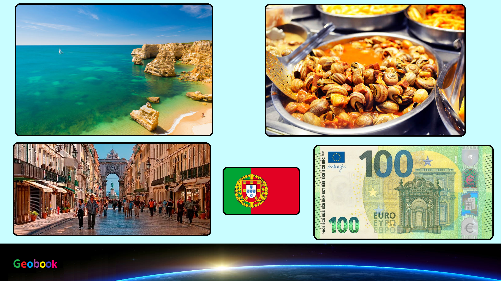

____
Климат
Субтропический, мягкий и без резких колебаний температур.
На севере преобладает морской климат, обусловленный Гольфстримом. Лето здесь сухое и солнечное, но не жаркое (средняя температура около 20°C, в горах - около 18°С), зима прохладная (от +4°С до +10°С) и дождливая. На юге погода всегда более теплая и сухая. Средняя температура января от +5°С до +10°С, июля - от +20°С до +27°С.
Осадков на равнинах выпадает от 400 до 800 мм, в горах от 1000 до 2500 мм в год.
____
